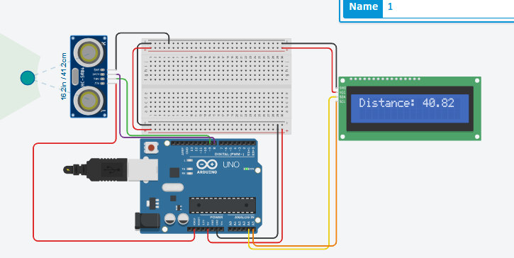
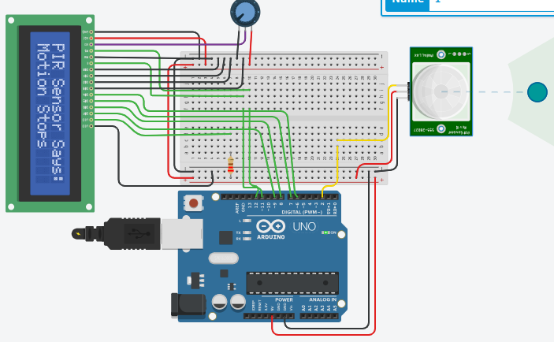

Week 6: Introduction to Wired Communication Protocols
This module focuses on understanding essential wired communication protocols used in embedded systems for device-to-device communication.
Key Learnings:
- Communication Protocols in Embedded Systems: Overview of why and how different protocols are used in embedded contexts.
- Working with communication protocols (I2C, UART, SPI): Detailed understanding and practical application of Inter-Integrated Circuit (I2C), Universal Asynchronous Receiver-Transmitter (UART), and Serial Peripheral Interface (SPI).
- Ultrasonic sensor: How to interface and read data from an ultrasonic sensor (e.g., HC-SR04) using communication protocols.
- PIR sensor: Understanding and interfacing with Passive Infrared (PIR) sensors for motion detection.
Projects/Exercises:
Day 1: Communication Protocols in Embedded systems.
Day 2: Working with communication protocols (I2C, UART, SPI).
Day 3: Ultrasonic sensor, PIR sensor.


TinkerCAD Circuit Examples:
Relevant Resources:
- Communication Protocols Embedded Engineers Should Know
- Serial Communication
- Understanding I2C
- Understanding SPI
- Arduino - Serial Peripheral Interface (SPI)
- Arduino - Two Wire (I2C)
- Raspberry Pi Pico - Ultrasonic Sensor
- Arduino - Ultrasonic Sensor
- PIR Sensor Theory
- Raspberry Pi Pico - PIR Sensor
- Arduino - PIR Sensor